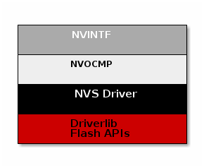
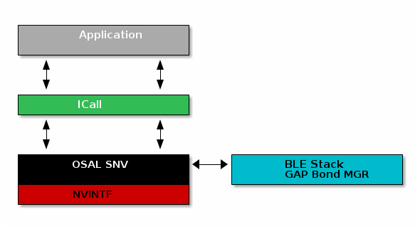

Flash¶
The flash is split into erasable pages of 8 kB. The various sections of flash and their associate linker files are as follows.
Flash Reset Vector Table: This table holds the first 16 reset vectors that are critical for booting up the device. These vectors are set at build time and cannot be dynamically changed. See Flash Vector Table for more information.
Simple NV (SNV) Area: used for nonvolatile memory storage by the GAP Bond Manager and also available for use by the application. See Non-Volatile Storage Architecture for configuring SNV.
For projects where the stack project builds a library:
Application and Stack Image Code Space: A single region that contains both application and stack code in flash. This image is configured in the linker configuration file of the application: <device name>_app_and_stack.icf (IAR) and <device name>_app.cmd (CCS).
Non-Volatile Storage Architecture¶
This section will describe the non volatile storage system that is implemented and used on the CC13xx or CC26xx. This system provides access to non volatile storage that can be safely shared between the user application and the protocol stack.
The system has the following properties and offers the following features:
Thread safe access to non volatile memory
ID based system that decouples a storage item from its address in memory
Space efficient storage with automatic compaction
Power loss tolerant data preservation
The implementation of this software system relies on several layers which are illustrated below.
Non Volatile Interface (NVINTF)¶
The NVINTF is an abstraction layer that defines a common set of APIs for interacting with non volatile memory using a ID system. This common set of APIs allow for new methods of NV storage to be implemented without changing the API calls in the stack and application. The ID system is most efficient because it decouples the data stored from its address in flash. This is necessary because flash banks must have the entire sector erased before writing again. (with the exception of clearing a bit). Using the ID system, when an NV item needs to be updated, it can simply be invalidated and stored again at a different address. Once the NV system becomes full of unused items, a compaction will occur. A compaction is the removal of unused items.
The NVINTF is function pointer based, each underlying transport must plug a function table and provide an implementation for the common set of APIs.
This interface is defined in nvintf.h. The NVINTF is not intended to be
changed by the customer, but instead used as is.
Non Volatile On-Chip Multi Page (NVOCMP) Driver¶
The NVOCMP driver implements a non-volatile memory system that utilizes multiple consecutive pages of on-chip Flash memory. After initialization, all pages except one are “active” and the remaining one page is available for “compaction” when the active pages do not have enough empty space for data write operation. Compaction can occur “just in time” during a data write operation or “on demand” by application request. The compaction process is designed to survive a power cycle before it completes. It will resume where it was interrupted and complete the process. The number of NV pages can be set by the NVOCMP_NVPAGES preprocessor define. If this is not set, it will default to 2.
Each flash page contains a “page header” which indicates its current state. The page header is located at the first byte of the flash page. Following the page header is the “compact header”, which indicates the flash page’s compaction state. The remainder of the flash page contains NV data items which are packed together following the page header and compact header.
Each NV data item is unique and has two parts:
A data block which is stored first (lower memory address)
An item header following the data block (higher memory address)
The item header (defined by NVOCMP_itemHdr_t) contains status information
required to traverse packed data items in the flash page. An example of the NV
item memory layout storing a single byte of data is illustrated below.
NV Item Header:
Field |
Size (bits) |
Purpose |
System ID |
6 |
Indicates the system component identifier |
Item ID |
10 |
Indicates the item data identifier |
Sub ID |
10 |
Identifier of the sub-data related to the NV item |
Length |
12 |
Length of the data block |
CRC |
8 |
CRC value of NV item |
Status Bits |
2 |
Indicates CRC integrity and if item is active |
Signature |
8 |
Used to detect presence of a NV item in flash |
For each NV item that is added or updated in NV storage, the item is written to the next lowest available memory address in the active flash page. If the NV item is being updated, the old NV item will be marked as inactive. Inactive items are removed from memory when a memory compaction takes place.
For more information, see the API documentation in nvocmp.h and the design description in nvocmp.c.
Non Volatile Storage (NVS) Driver¶
The NVS driver provides reentrant functions for writing to and reading from flash. It also provides a common interface to both internal and external flash. More information can be found in the TI Drivers documentation. The stack will use internal NV, currently this is all that is supported.
Non Volatile Storage with the BLE-Stack¶
The BLE-Stack implements some additional layers on top of the NVINTF. These additional layers define the recommended interaction between BLE enabled applications, the BLE-Stack, and the NVINTF implementation.
The additional layers required when using BLE stack are listed below:
ICall: NV interactions occur in stack thread facilitated by ICall
OSAL SNV: A wrapper on top of the NVINTF that defines a NV tag structure for BLE
The figure below shows the architecture of the entire system.
OSAL Simple NV (OSAL SNV)¶
The GAP Bond Manager will use OSAL SNV for storing persistent data, such as
encryption keys from bonding. The OSAL SNV layer is implemented via a simple
wrapper that defines a higher level structure on top of the existing
NVINTF_itemID_t structure. At a high level this simply maps the
osalSnvId_t that is used by the stack to NVINTF_itemID_t that is used
by the NVINTF layer. It will always use NVINTF_SYSID_BLE when storing
OSAL SNV data. The ID system implemented is detailed below. By default, the IDs
available to the customer are defined in bcomdef.h as shown in
Listing 200.
1// Device NV Items - Range 0 - 0x1F
2#define BLE_NVID_IRK 0x02 //!< The Device's IRK
3#define BLE_NVID_CSRK 0x03 //!< The Device's CSRK
4#define BLE_NVID_ADDR_MODE 0x04 //!< The Device's address type (@ref GAP_Addr_Modes_t)
5#define BLE_LRU_BOND_LIST 0x05 //!< The Device's order of bond indexes in least recently used order
6#define BLE_NVID_RANDOM_ADDR 0x06 //!< The Device's random address if set by the current @ref GAP_DeviceInit
7
8// Bonding NV Items - Range 0x20 - 0xDF - This allows for 32 bonds
9#define BLE_NVID_GAP_BOND_START 0x20 //!< Start of the GAP Bond Manager's NV IDs
10#define BLE_NVID_GAP_BOND_END 0xDF //!< End of the GAP Bond Manager's NV IDs Range
11
12// GATT Configuration NV Items - Range 0xE0 - 0xFF - This must match the number of Bonding entries
13#define BLE_NVID_GATT_CFG_START 0xE0 //!< Start of the GATT Configuration NV IDs
14#define BLE_NVID_GATT_CFG_END 0xFF //!< End of the GATT Configuration NV IDs
15
16// Customer NV Items - Range 0x100 - 0x11F
17#define BLE_NVID_CUST_START 0x100 //!< Start of the Customer's NV IDs
18#define BLE_NVID_CUST_END 0x11F //!< End of the Customer's NV IDs
19
20// BLE Mesh NV IDs Start
21#define BLE_NVID_MESH_START BLE_NVID_CUST_END + 1
The range of NV items reserved for the customer’s application can be increase as much as needed as long as all the IDs remain unique and below 0x03FF.
Additionally it will set a compact level via the GAP Bond Manager which
defaults to 80%. This is set by the NV_COMPACT_THRESHOLD define.
This layer is implemented by osal_snv_wrapper.c.
Limitations and Intended Use¶
The following limitations apply to those using NV alongside the BLE5-Stack.
NV implementations (i.e. NVOCMP) should not be used directly; the application should access NV through OSAL SNV. See Using SNV Example Code
The application must be careful to only use IDs in the range defined by Listing 200.
The application cannot access the NV regions reserved by the stack directly or the internal structure may be corrupted.
When using NVOCMP, the memory allocated for internal NVS access must be pages of contiguous memory.
Since OSAL SNV exists on the stack side of ICall, an application that uses OSAL SNV must be ICall enabled.
OSAL SNV operations must be called from a task context and not a Hwi or SWI context.
Some care must be taken to not be close to 80% (or other compaction threshold) utilization of a sector. BLE stack uses 49 bytes to store local info (IDs 0x02 to 0x06). In addition, 109 bytes per bond stored are required.
Frequent compactions are costly in terms of power consumption and can cause resets and lost SNV content (NVOCMP) and will also wear out the flash.
OSAL SNV API Set¶
SNV can be read from or written to using the following APIs.
uint8 osal_snv_read( osalSnvId_t id, osalSnvLen_t len, void *pBuf)
Read data from NV |
|
Parameters |
id - valid NV item len - length of data to read pBuf - pointer to buffer to store data read |
Returns |
Status as defined in |
uint8 osal_snv_write( osalSnvId_t id, osalSnvLen_t len, void *pBuf)
Write data to NV |
|
Parameters |
id - valid NV item len - length of data to write pBuf - pointer to buffer containing data to be written. All contents are updated at once. |
Returns |
Status as defined in |
OSAL SNV Example¶
Listing 201. shows how to read and write an array of bytes from SNV flash:
/*********************************************************************
* GLOBAL VARIABLES
*/
#include <icall_ble_api.h> // OSAL SNV operations are defined through ICALL
// ...
#define BUF_LEN 4
#define SNV_ID_APP 0x100
// Assuming Two Button menu is used
#define SP_NVS_DEBUG (TBM_ROW_APP + 10)
uint8 buf[BUF_LEN] ={0,};
static void SimplePeripheral_taskFxn(UArg a0, UArg a1)
{
// Initialize application
SimpleBLEPeripheral_init();
uint8 status = SUCCESS;
status = osal_snv_read(SNV_ID_APP, BUF_LEN, (uint8 *)buf);
if(status != SUCCESS)
{
Display_printf(dispHandle, 0, SP_NVS_DEBUG, "SNV READ FAIL: %d", status);
//Write first time to initialize SNV ID
osal_snv_write(SNV_ID_APP, BUF_LEN, (uint8 *)buf);
}
//Increment first element of array and write to SNV flash
buf[0]++;
status = osal_snv_write(SNV_ID_APP, BUF_LEN, (uint8 *)buf);
if(status != SUCCESS)
{
Display_printf(dispHandle, 0, SP_NVS_DEBUG, "SNV WRITE FAIL: %d", status);
}
else
{
Display_printf(dispHandle, 0, SP_NVS_DEBUG, "Num of Resets: %d", buf[0]);
}
// Application main loop
for (;;)
{
//...
}
}
No prior initialization of a NV item ID is required; the OSAL SNV manager initializes the NV ID when first accessed by a successful osal_snv_write() call.
When reading or writing large amounts of data to SNV, TI recommends placing the read/write data in statically (linker) allocated arrays or buffers allocated from the heap. Placing large amounts of data in local arrays may result in a task stack overflow.
Placing OSAL SNV¶
This section details how the SNV flash sector is placed in memory.
The memory placement for the OSAL_SNV is set by Sysconfig in the section TI Drivers → NVS as shown in the picture below.

Placement of this structure is flexible and configurable by the user so long as the intended use guidelines are followed.
This structure is accessed via the NVINTF through NVSCC26XX_* APIs.